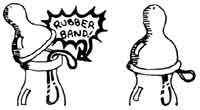

If every one of today's homesteading families has learned as much from their rural neighbors as we have from ours . . . then there must be-buried just beneath the surface of MOTHER-land-a whole mine of country lore that should be shared.
You know the kind of information I mean: those little, practical down-home, time tested solutions for minor problems. Solutions that somehow never get included in textbooks or written up into articles . . . yet which you and I use every day simply because they work.
Here, for starters, are a few gleanings from the Bubel tribe's collection of rural wisdom (wisdom which we, for the most part, have winnowed from the much larger storehouse of native horse sense that our friends, relatives, and acquaintances regularly draw upon).
You'll notice that the larger percentage of the following tips and hints can be implemented with nothing more exotic than common, everyday farm findings . . . such as baskets, feed bags, or vinegar. So-if you'd rather fix or improvise what you need, rather than order a "for cash " replacement or make an expensive trip to the store-check in with its here at the Country Lore Column from time to time.
You're our kind of people!
I've run into this little problem more than once, and I'm sure that you have too: It's spring. A beautiful day. And you've gone out to do the chores without putting on a hat or coat. Then-just as you start back to the house with a full pail of milk and your pockets stuffed with eggs-you're greeted at the stable door by . . . sudden sheets of rain!
What do you do? Improvise a protective hood, that's what! Find a feed bag and hold it upside down by its two "closed" corners. Then [1] I poke one of those corners into the other to form a hood and [2] drape the mini-cape over your head and shoulders to keep that spring shower from running down your neck as you dodge mud puddles on your way to the house. It works!
And how do you keep a broody hen from slipping off into the weeds to hatch a flock of baby chicks when you want her to stay in the chicken-house and produce eggs? We didn't know either . . . until my husband's mother let us in on a little secret straight from the peasants of Poland: Dip the broody biddy in water and cover her overnight with a weighted bushel basket. She'll be clucking and gossiping about her unseemly treatment the next day . . . but she probably won't be "setty" anymore. We've used this simple idea several times-always successfully-but we'd never try it in freezing weather (for fear of chilling the hen).
Cream of tomato soup-especially when made from your own home-canned tomatoes and milk from your own goats or cows and seasoned with sauteed onion and a little basil from your own garden-is delicious. And it's even better when it doesn't curdle! The trick? Heat the milk and the tomatoes separately and then add the hot "love fruit" slowly to the hot milk . . . stirring all the while.
Be sure to keep your sheep in the barn the night before you shear them, so their fleece won't get wet from rain or dew. Damp wool can get tangled up in an electric clipper and-quite possibly-cause both the animal being sheared and the individual doing the clipping to receive a nasty shock.
Forking a deep layer of packed and trampled bedding from the chicken-house can be an exhausting job. So let the birds help you! Scatter handfuls of oats or corn on the litter during the evening and morning before you plan to tackle the task. As the flock feasts on the treasure of grain, they'll scratch and kick and fluff up the bedding enough to make it easier for you to handle.
The next time you splurge on a new broom, boil its business end in water for 15 minutes before you use the sweeper for the first time. I don't know why but when brooms are given such a "breaking in", they last longer.
Many people who grow comfrey harvest the Plant's foliage by using a knife to slice off the whole "head" parallel to the ground. Former MOTHER staffer Julie Needham, however, once wrote me that her comfrey grows back more quickly when she hand plucks only the largest leaves from each plant . . . and allows the faster developing young leaves on the heads to remain undisturbed.
Need a pastry brush to spread beaten egg or milk on your freshly risen bread (so its crust will be crunchy-good after the loaves are baked)? Try a clean goose feather.
If you have baby lambs or goat kids to bottle feed, always apply the nipple over a doubled rubber band as you cap each container of milk. The small amount of air that will then be admitted to the bottle as its contents are drained will prevent the usual (and most exasperating) collapse of the "faucet".
Another tip: When a nipple is new and difficult to stretch over the neck of a bottle . . . just dip the rubber feeding device-open end down-into water (use warm or hot water if the nipple is really tight) before you try to cap the container.
And another tip yet: If one or more weak lambs or kids are being kept on whole milk or a special formula after others in the group have already been switched to skim milk or a milk replacer, use colored rubber bands (under the nipples, remember?) to help you keep the bottles separate.
OK. Now it's your turn! How do you store sweet potatoes so they'll last until spring? How do you know when the lard's done? What short, terse, down-home, how-to advice can you contribute to this column?
Send your country lore to Nancy Bubel, RD 1, Wellsville, Pennsylvania 17365. I'll make sure that the most useful suggestions I receive will appear in upcoming editions of this feature. And the home office editors of THE Mother Earth News (restricted) (the ones who work down in the mountains of North Carolina) tell me that a one-year subscription-or extension of an existing subscription-will be sent to each contributor whose idea or tip is printed in this column. I look forward to hearing from you.- Nancy.
|
|
|
 |